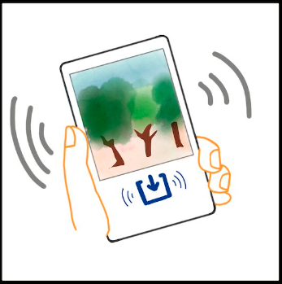

Hi, I’m a PhD student in Information Science at Cornell. I research human-computer interaction and user experience design with a focus on qualitative and design research methods.
I’m reachable via email (jxc5@cornell.edu) or on Twitter at @janetchen906. You can download my CV here or UX research resume here.
Explore my research and academic projects:
- 2021/05/01 What Happens to Data after Death?